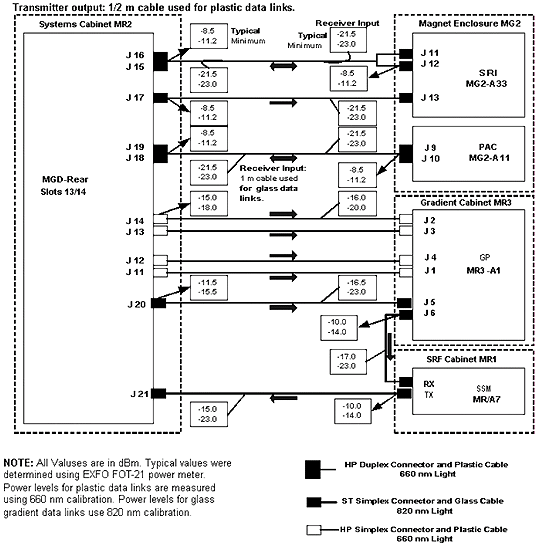

- 00000018WIA300F2E20GYZ
- id_131076203.0
- Aug 29, 2019 1:38:20 AM
STIF Board SRI PAC MDS Link Fiber Optic Checks
Prerequisites
| Required persons | Preliminary requirements | Procedure | Finalization |
|---|---|---|---|
| 1 | - | - | - |
| Item | Quantity | Effectivity | Part number | Manufacturer |
|---|---|---|---|---|
| Fiber Optic Light Meter Kit | 1 | - |
46-317830G1 | - |
| ||||
| Condition | Reference | Effectivity |
|---|---|---|
| - | - |
About this task
This procedure describes how to turn on the fiber optic drivers in a Signa system. Software output control is provided for the HFBR-1522 drivers (plastic cable) and the HFBR-1414 drivers (glass cable) on the STIF Board in the MGD Chassis, the HFBR-1522s (plastic cable) on the PAC and the SRI, and the HFBR-1522 drivers (plastic cable) on the MDS peripherals.
STIF BOARD, SRI, PAC, AND MDS LINK FIBER OPTIC CHECKS
Procedure

Fiber Optic Power Level Measurement
Procedure
- Measure transmitter output through test cable with EXFO fiber optic
meter. Compare this value with specification. See Figure 4 or Figure 5 (with
Fiber Optic Repeater). If value is out of spec, there is a problem. It could
be a power supply problem, transmitter problem, or functional problem with
board. Do not proceed until this value is within spec.
Figure 4. 1.5T FIBER OPTIC POWER LEVELS 
Figure 5. 1.5T FIBER OPTIC POWER LEVELS WITH FIBER OPTIC REPEATER  Note:
Note:To troubleshoot the fiber optic communications link between the IT-MGD Board in the Systems Cabinet and the IT-Host Board in the Host Computer, refer to procedure “System Cabinet Communication Troubleshooting Release 10.x”. This proprietary procedure is available for GE use, and to sites with a valid Advanced Service Package Limited License.
Note:The fiber optic connectors are a latching type connector. For the plastic cable connectors, press on the latch to release. For the glass cable connectors, press on the outer connector shell and rotate a quarter turn.
TEST SPECIFICATIONS
About this task
The following data characterize fiber optic power levels in a Signa system. Typical data were obtained from a limited sample of systems. Typical values may cover a wide range due to the effects of cable routing, connecting, and cable length which may vary from system to system. Minimum values, however, are absolute, and will be the same for fixed sites, mobiles, and T/R(s).
Procedure
STIF J16 to SRI J11; STIF J17 to SRI J13; SRI J12 to STIF J15; STIF J19 to PAC J9; PAC J10 to STIF J21:
-
Nonmodulated HFBR-1522 transmitter output through 1/2 m test cable:
Typical: -8.5 dBm
Minimum: -11.2 dBm
-
Nonmodulated HFBR-1522 transmitter output through 147 ft cable:
Typical: -21.5 dBm
Minimum: -23.0 dBm
GAP J6 to SSM RX:
-
Nonmodulated HFBR-1522 transmitter output through 1/2 m test cable:
Typical: -10.0 dBm
Minimum: -14.0 dBm
-
Nonmodulated HFBR-1522 transmitter output through 82 ft cable:
Typical: -17.0 dBm
Minimum: -23.0 dBm
STIF J20 to GP J5:
-
Nonmodulated HFBR-1522 transmitter output through 1/2 m test cable:
Typical: -11.5 dBm
Minimum: -15.5 dBm
-
Nonmodulated HFBR-1522 transmitter output through 46 ft cable:
Typical: -16.5 dBm
Minimum: -23.0 dBm
SSM TX to STIF J21:
-
Nonmodulated HFBR-1522 transmitter output through 1/2 m test cable:
Typical: -10.0 dBm
Minimum: -14.0 dBm
-
Nonmodulated HFBR-1522 transmitter output through 46 ft cable:
Typical: -15.0 dBm
Minimum: -23.0 dBm
Fiber Optic Repeater (FOR) Data Links:
STIF J25 to FOR J9; STIF J23 to FOR J11; FOR J10 to STIF J15; STIF J19 to FOR J7; FOR J8 to STIF J18:
-
Nonmodulated HFBR-1522/1532 transmitter output through 1/2 m test cable:
Typical: -8.5 dBm
Minimum: -11.2 dBm
-
Nonmodulated HFBR-1522/1532 transmitter output through 60 ft cable:
Typical: -15 dBm
Minimum: -23.0 dBm
FOR J5 to SRI J13; FOR J3 to SRI J11; FOR J1 to PAC J9; PAC J10 to FOR J2; SRI J12 to FOR J4:
-
Nonmodulated HFBR-1522/1532 transmitter output through 1/2 m test cable:
Typical: -8.5 dBm
Minimum: -11.2 dBm
-
Nonmodulated HFBR-1522/1532 transmitter output through 90 ft cable:
Typical: -17.5 dBm
Minimum: -23.0 dBm
Gradient (glass) Data Links: (AMP fiber 502083-1 with ST type connectors and 820 nm HFBR-1414/HFBR-2416 transmitter/receiver pair)
STIF J14 to GP J2; STIF J13 to GP J3; STIF J12 to GP J4; STIF J20 to GP J1:
-
Nonmodulated HFBR-1414 transmitter output through 1 m test cable:
Typical: -15 dBm
Minimum: -18.0 dBm
-
Nonmodulated HFBR-2416 transmitter output through 46 ft glass cable:
Typical: -16 dBm
Minimum: -20.0 dBm
Finalization
Procedure
- Turn off the fiber optic meter. Disconnect all kit components used in
measurement scheme and return to kit. See Figure 6.
Figure 6. Fiber Fiber Optic Light Meter Kit